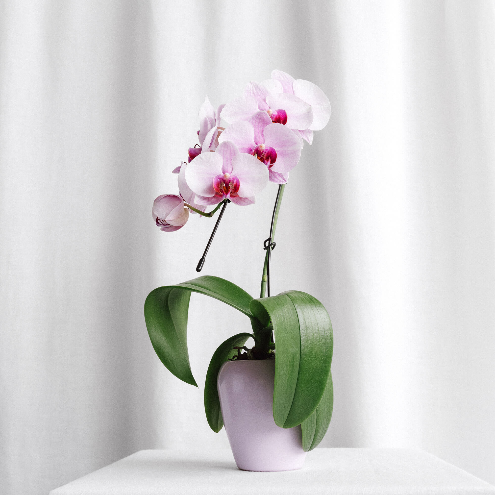
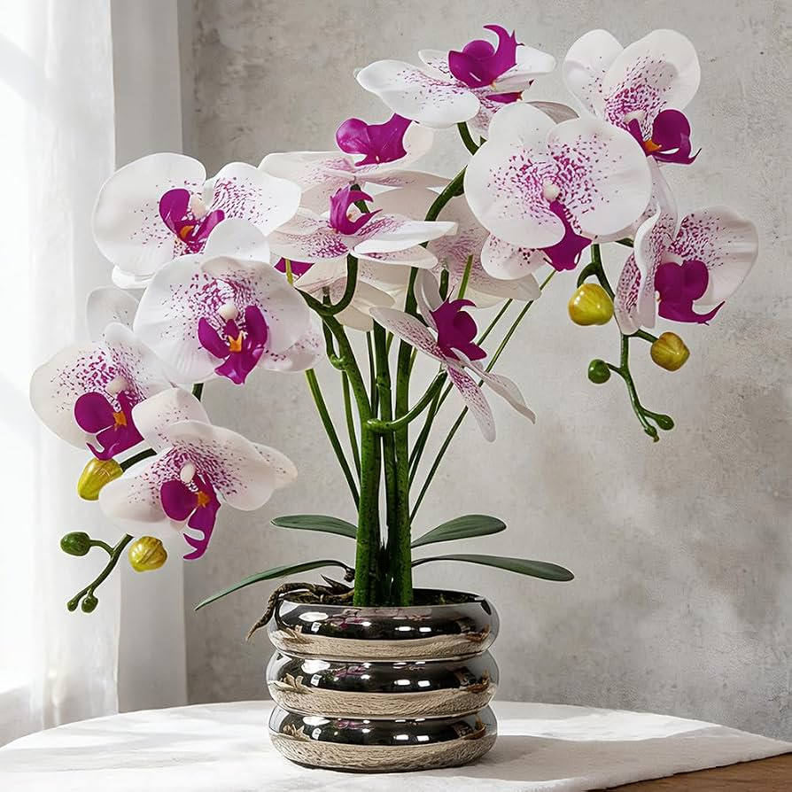
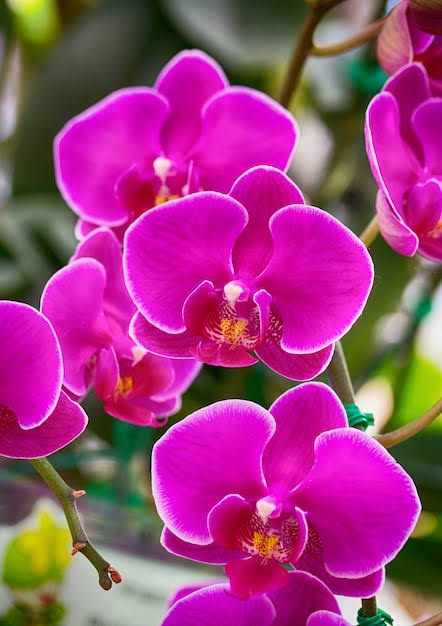
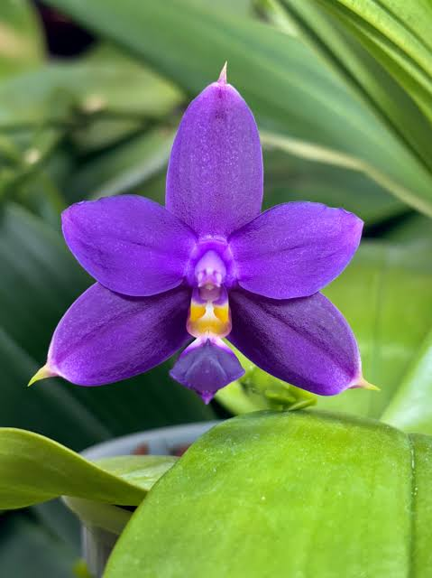

Phalaenopsis (Orquídea mariposa)
La Phalaenopsis, conocida como orquídea mariposa, es una de las especies de orquídeas más populares por la belleza y duración de sus flores. Su nombre se debe a la forma de sus pétalos, que se asemejan a las alas de una mariposa. Es originaria de regiones tropicales de Asia y se adapta muy bien al cultivo en interiores.
Características:
- Flores grandes, delicadas y duraderas.
- Puede presentar colores como blanco, rosa, amarillo, morado y combinaciones.
- Tiene hojas anchas, verdes y carnosas.
- Sus flores tienen una forma similar a una mariposa.
- Prefiere lugares con buena iluminación indirecta.
- Necesita riego moderado y buena humedad.
- Puede florecer varias veces al año con los cuidados adecuados.



